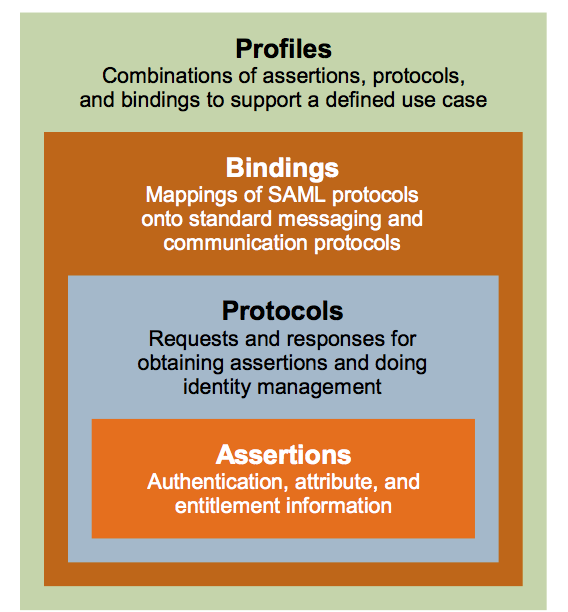

saml2
saml，Security Assertion Markup Language，安全断言标记语言。
SP，Service Provider 服务提供方。
IdP，Identity Provider 身份认证方。
通过浏览器 GET 或者 POST 请求来转发请求、交互信息。
IAM，Identity and Access Management.
IdP Metadata.xml
| 参数 | 含义 |
|---|---|
| entityID | IdP 唯一标识。 建议使用域名形式，确保全局唯一。取值中要包含“https://”。 示例：https://www.idp.com |
| 两个 |
是一份包含公钥的证书，该证书用于验证签名。为了确保安全性，建议使用长度大于等于2048位的公钥。SP通过IDP元数据文件中的签名证书来确认认证过程中断言消息的可信性、完整性。 |
| <md:SingleLogoutService中Location的值 | 会话注销功能。示例：https://www.idp.com/saml/logout |
| <md:SingleSignOnService中Location的值 | IDP处理SAML请求认证的地址，用以接收处理SAMLRequest，并生成SAMLResponse，示例：https://www.idp.com/saml/login |
登录流程
未登录时，浏览器会将页面重定向到 IdP，
-
HTTP Redirect Binding
https://samltest.id/idp/profile/SAML2/Redirect/SSO?SAMLRequest=fVNdj5swEHy%2FX4F4Twy0lyArSZUm%2FYiUJijQPvSl2rOXniWwqb3c5f59bZLr5aRrQAixnp3dmV1mDtqm48ue7vUB%2F%2FTo6CaKjm2jHR%2BO5nFvNTfglOMaWnScBC%2BX37Y8Gye8s4aMME38Kul6DjiHlpTRIWmznsf73aft%2Fstm96uWAlLI6izL8xon%2FkGAuywFuJ2K6URmaZokE6hD4g%2B0znPMY08ZvqOosOZBSbQ7X3Eel0VEXsxQw7keN9oRaPL4JEtHye0oS6sk5%2B9ynr3%2FGVBrj1YaaCC9J%2BocZyyoCTRjJZmSHfN6a9UgC2IydkCpLApiZbkPFMXZjY9KS6V%2FX7fh7gRy%2FGtVFaNiX1aBYvlszspo17doS7QPSuD3w%2FbUlW8qzabjxN8pz5N8yj6AcPFisGAW%2BuWDXrt4G90igQQCNmOX4Jf0jgcDN%2BvCNEo8DfFwfTa2Bfq%2FpNQXCBElR%2FUA5b12HQpVK5TxP5pl05jHlUUgPyOyPcYRe1X8vIQoh5X0LhAeKVqZtgOrXJgNHkHQWfCL6Ev4qvE7dsB6cXUNBRcB58OFfz0aK8P8%2FDhRVhZ888bS2aQ3yU9dsyttL26ejy%2F%2Fr8Vf&RelayState=http%3A%2F%2F127.0.0.1%3A8087%2FQuery String Parameters：
-
SAMLRequest。 -
RelayState，an URL parameter that we use to say to our Identity Provider where he should send the response back。
下面 python3-saml-demo-django 代码示例中，配置
saml/advanced_settings.json中的"authnRequestsSigned": True,，则会使用SigAlg和Signature参数。GET https://samltest.id/idp/profile/SAML2/Redirect/SSO?SAMLRequest=fVNNj9owEL3vr4hyBychfFlARaEfSBQikt1DL5WxJ11LiZ3ak13239cObJeVtiSHKOM3b%2Ba9Gc8sq6uGLlt8VAf404LFuyA41ZWytDuah61RVDMrLVWsBkuR03z5Y0uTfkQbo1FzXYXvkm7nMGvBoNTKJ23W83C%2F%2B7Ldf9vsfqWTMZsM4hFPh8ekTOPRMR0Mk%2Bl0cBSpGIppGsNUJCPmEx%2FAWMcxDx2l%2Fw%2BCzOgnKcDsXMV5mGcBOjFdDWtb2CiLTKHDR0nci4a9eFrEEY0GNI1%2BetTaoaVi2JE%2BIjaWEuLVeJq%2BFESKhji9payAeDEJOYCQBjiSPN97iuzixmephFS%2Fb9twPIMs%2FV4UWS%2Fb54WnWL6as9LKtjWYHMyT5HB%2F2J67ck3FybgfuTemk2gyJp8Yt%2BGis2Dm%2B6WdXrP4GF0DMsGQkRm5Br%2BlN9QbuFlnupL8pYv756s2NcP%2FS4pdAR%2BRold2UNoq2wCXpQQR%2FqNZVpV%2BXhlg6GaEpoUwIO%2BKX5YQRLeSzgWEEwYrXTfMSOtnAyfG8SL4TfQ1fFW5HTtAubi5hpxyj3PhzH2etRF%2Bfm6cIArDXPPa4MWkD8nPXZMbbS%2FuXo%2Bv79fiLw%3D%3D&RelayState=http%3A%2F%2F127.0.0.1%3A8087%2F&Signature=DKJ1wQO7FTxrt7mGh6ytws%2B8KvMaM5AdT1Ls3sBM5JSPZOMsCdvCwMWAOkGU8EE1LGtkFrD6mpjI%2B%2FXeejQ03e6LdjrtGCdVp0ht2tunEpsPv2Ia31%2FvSGs39jCBRmTkPOnl21Of8T%2BOnCfmjxs4qhpFX25KX0TxfhK%2BMP9ZXa1XKAcrdiLXC%2B0jNYQth75eCG%2BrvgW53inFfNy6diNdPqM0AjhCVqhSFezuBuw9BJciVXi9T8occUiWFDCOFn8ThjrJOB0eslft2%2Bx5GrKnjr8RO1so7WnSz1N5FIe5Uw0713iXD16BsM9xVHLHbA01E0SIy%2Bz40J3C4XZyhB43Vw%3D%3D&SigAlg=http%3A%2F%2Fwww.w3.org%2F2001%2F04%2Fxmldsig-more%23rsa-sha256-
SigAlg，可选，签名算法（比如：http://www.w3.org/2001/04/xmldsig-more#rsa-sha256）。 -
Signature，可选，签名值。SP 发起请求前，会将请求中的SAMLRequest={SAMLRequest}&RelayState={RelayState}&SigAlg={SigAlg}使用 SP 私钥签名（签名算法为SigAlg字段指定的算法），之后再做一次 Base64 编码作为签名值。
如果有参数签名的话，IdP 收到请求后通过 SP 公钥（SP Metadata.xml文件中
<ds:X509Certificate></ds:X509Certificate>标签内的值）来验证签名。签名验证通过，则表明是合法 SP 发送的请求可以进行后续操作，否则请求非法。 -
-
HTTP POST Binding
POST https://win-mi64c2jsv9s.lian.local/adfs/ls/Form Data:
-
SAMLRequest。 -
RelayState。
-
显示 Idp 登录页面，用户登录成功后，IdP 发送 POST 请求（就是一个 HTML form 表单和一段立即提交该表单的 JS 代码）给 SP（AssertionConsumerService）并带上以下参数：
POST https://demo.seafile.top/saml2/acs/
Form Data:
-
SAMLResponse。 -
RelayState，samlRequest中相同参数值。
SP 收到 SAMLResponse 后，解析出用户信息，进行后续操作。
Saml Tech Overview

Referer
- Reloading SAML: Do you really need SAML?
- Reloading SAML : SAML Basics
- 华为云 IDP Metadata.xml
- 华为云 saml 认证
- Authing saml overview
Tools
- decode SAML requests
- https://developers.onelogin.com/saml/online-tools/x509-certs/obtain-self-signed-certs
python3-saml-demo-django
https://github.com/imwhatiam/python3-saml-demo-django
-
idp 使用 https://samltest.id/ 提供的服务。也可对接 onelogin 提供的 idp 服务，具体参考：https://developers.onelogin.com/saml/python 。
-
sp 使用 https://github.com/onelogin/python3-saml
用法
运行命令（也可下载 Dockerfile 和 settings.json 到同一目录后自行 docker build -t imwhatiam/python3-saml-demo-django:v1 .）：
docker run -it -p 8000:8000 --name test-saml2 imwhatiam/python3-saml-demo-django:v1 bash
进入到容器后，再运行：
python3 manage.py runserver 0.0.0.0:8000
然后浏览器中访问 http://127.0.0.1:8000/
点击 Login，之后进入到 https://samltest.id/ 的登录界面，按提示输入用户名密码后，即可跳转回本地，并显示已登录用户的信息。
额外说明
上传 metadata 到 https://samltest.id/
我已经预先设置好，如 sp 访问地址变了，需要重新上传：
- 访问 http{s}://new-domain-or-ip/metadata/ 并将 xml 文件下载到本地。
- 访问 https://samltest.id/upload.php 将 xml 文件上传上去。
配置 settings.json
我已预先配置好:
sp 部分使用 onelogin 默认配置 https://github.com/onelogin/python3-saml/blob/master/demo-django/saml/settings.json#L4 ，但注意需要改为自己的域名或IP。
sp 使用自签名证书：openssl req -new -x509 -days 3652 -nodes -out sp.crt -keyout sp.key
idp 部分参考 https://samltest.id/download/#SAMLtest%E2%80%99s_IdP